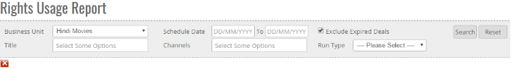
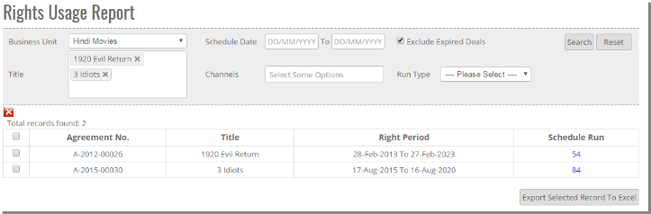
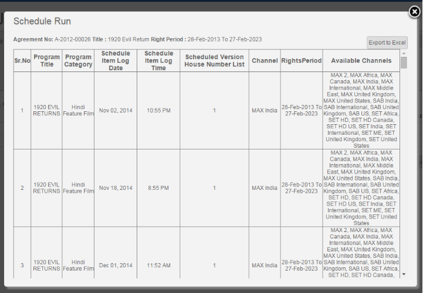


	<section>
		<article>
			<h2>Rights Usage Report<span></span></h2>
			<div>
				<p></p>

				<p>This reports is accessible to those user who has right for this module.</p>

				<p>This report focuses on how many runs are scheduled for a particular title. </p>

				<p>To access this report click on "<b>Reports</b>"and then click on "<b>Rights Usage Report</b>" which gives in following below screen.</p>

				<div class="triangle-border top">				
					
				</div>

				<p>In Above screen user can see many option Business Unit, Schedule date, Title, Channels , run Type , Search Button , Reset button.</p>

				<p><b>Business Unit</b> : Record will come according to business unit For Eg : Hindi Movie , Hindi Content , Sports etc.</p>

				<p><b>Schedule Date</b> : Report will come according to Schedule date filters applied by user.</p>

				<p><b>Title</b> : Search by particular titles where user can select Single or Multiple title </p>

				<p><b>Channels</b> : User can select channel as per there requirement to check particular channel details </p>

				<p><b>Run Type</b> : It will show 2 Type of Run : Limited and Unlimited (user can select any one option at a time to check report )</p>

				<p><b>Search Button</b> : After applying all the criterias, data is generated when user clicks on Search button.</p>

				<p><b>Reset</b> : This will reset all the selected user criteria.</p>

				<div class="triangle-border top">				
					
				</div>

				<p>Every title will be displayed with scheduled runs. If any title(s) has runs then it will show with that many no of runs otherwise it shows as 0. As given in above screen shot</p>

				<p>To see more details about schedule runs click on their respective hyper links for any particular title like below.</p>

				<div class="triangle-border top">				
					
				</div>

				<p>This window shows details about on which channel and date, for which house id, at what time this title got actual runs. Along with this it also shows some other details like title, rights period, available channels. </p>

				<p>If user want to close this window click on '<b>Close</b>' button.</p>

				<p>If user want to take on excel then click on "<b>Export To excel</b>" Button, </p>
				
			</div>
		</article>
	</section>